秋葉山円通寺/愛知県名古屋市
名古屋市の熱田にやって来た。
ここは熱田神宮のすぐ近く、「秋葉三尺坊大権現」のノボリが眩しい円通寺という寺である。
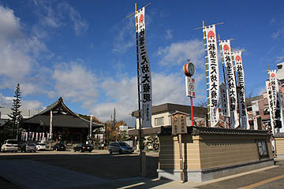
この数年で想像以上に浅野作品がたくさん存在することを知った私は愛知県内にいる際はゴルゴ13並みに周囲に注意を払う体質になってしまった。
特にノボリが並ぶ寺や個人霊場などは要注意だ。とはいえ名古屋近辺にはこの手のノボリが非常に多いので普通にドライブしたり散歩しているだけでも凄く疲れるのだが。
この日もハンドルを握っていた私の視界の端に浅野レーダーがピコ〜ン！ピコ〜ン！と反応！「前方、右、30度、に、浅野作品、が、あります」と脳内カーナビがナビゲート。
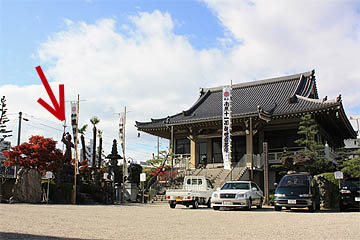
果たして、そこには大きな毘沙門天像が堂々と仁王立ち（毘沙門立ちですか？）していた。
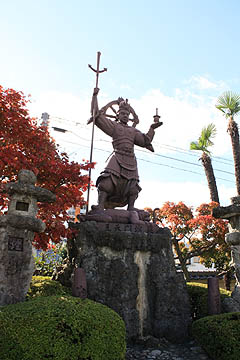
滝を模した自然石っぽい台座、えび茶色の躯体。
台座脇の花筒の裏側に「祥雲」の銘があった。
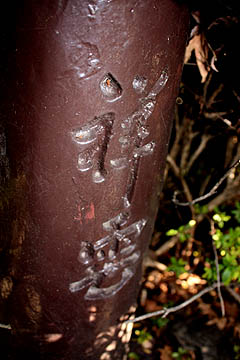
昭和44年の作。浅野師78歳の手による毘沙門天像である。
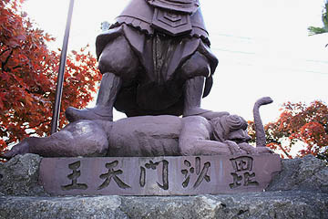
足元の邪鬼に目が釘付け！
なんだかやけにリアルな邪鬼は蛇を掴んで苦悶の表情を浮かべております！
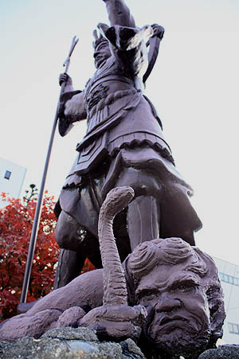
ここで思い出されるのが先に紹介した岩崎御嶽山の毘沙門天像。
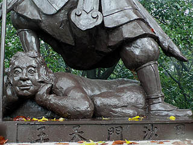 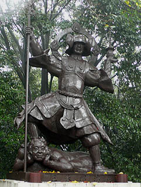
ここの毘沙門天像の前年、昭和43年に制作されたコンクリ像である。
毘沙門天自体の造形も去ることながら、着目したいのは足元の邪鬼である。
このムチムチっぷりは如何なものであろう。
ここ秋葉山円通寺と岩崎御嶽山の毘沙門天の邪鬼だけはコレまでの浅野作品の中でも特に異質に思える。
独自の彫塑世界を展開していた浅野師、ここにきて西洋彫刻（のようなもの）を極めようとしたのだろうか。
70代後半で己の造形観をひっくり返そうとしていたのだとすれば、それは驚愕に値する。
毘沙門天の前にはこんな素敵な香炉が。
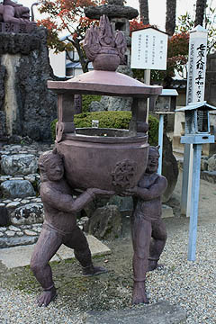
ハイ〜お線香をどうぞ〜。
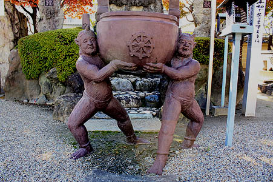
これまで数々の浅野祥雲師の作品を見てきたが、この香炉を持つ2匹の鬼は一二を争う傑作だと思う。
全ての力がふにゃふにゃと抜けたような感覚。そしてその脱力感の中から湧き出てくる笑い。
もしかしたら私が浅野作品に求めている全てがこの鬼に詰まっているのかも知れない。
浅野祥雲師がそのコンクリ人生の老境にあって到達し得たひとつの極点といえよう。
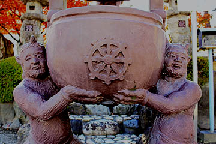
屈託のない鬼の表情はホラ、まるで「やさしい鬼です」と言っているようではないか。
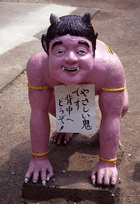←桃太郎神社のやさしい鬼
2008.11.
珍寺大道場 HOME